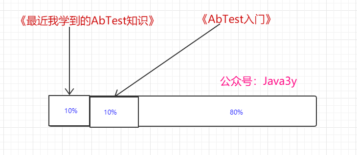
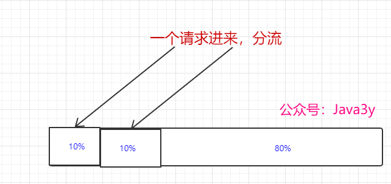
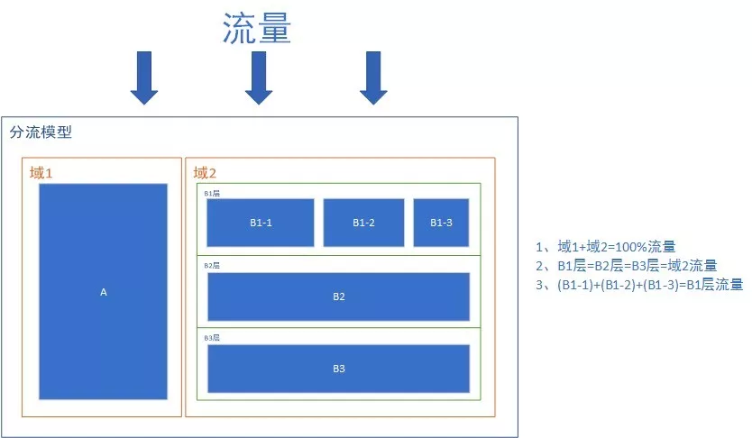
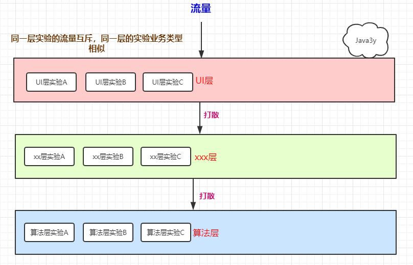

原文连接:https://www.cnblogs.com/Java3y/p/11763048.html
前言
只有光头才能变强。
文本已收录至我的GitHub仓库，欢迎Star：https://github.com/ZhongFuCheng3y/3y
如果之前看过我文章的同学就知道我在工作中搞的是推送系统，之前写过一篇 带你了解什么是Push消息推送，里面也提到了我们或许可以做ABTest，最终提高推送消息的点击率。
那什么是ABTest呢？这篇文章带你们入门一下。
一、ABTest的介绍
比如我写了一篇关于ABTest的文章，我希望这篇文章的阅读量能上2500，但是我没想好标题叫什么比较合适。一条推文的标题非常能影响到阅读量，于是我想了几个的标题：
- 最近我学到的AbTest知识
- AbTest入门
而我不知道哪个标题效果会更好一些，于是我做了这么一个尝试：
- 《最近我学到的AbTest知识》这个标题推送给10%的用户
- 《AbTest入门》这个标题推送给10%的用户
- 过一段时间后，我看一下效果，哪个标题的阅读量更高，我就将效果高的标题推送给剩余80%的用户

要注意的是：在推送的文章的时候，除了标题不同，其他因素都需要相同（不能被别的因素给干扰），这样看数据的时候才有说服力。
1.1为什么要做ABTest？
做ABTest的原因其实很简单，我们在做业务的时候会有各种各样的想法，比如说：
- “我觉得在文案上加入emoji表情，这个推送的消息的点击率肯定高”
- “我觉得这个按钮/图片换成别的颜色，转化率肯定会提高”
- “我觉得首页就应该设计成这样，还有图墙应该是这样这样..“
- .....
但是，并不是所有的想法都是正确的，很可能因为你的想法把首页的样式改掉，用户不喜欢，就影响到了GMV等等等....
一个好的产品都是迭代出来的，而我们很可能不清楚这次的迭代最终是好是坏（至少我们是觉得迭代对用户是好的，是有帮助的，对公司的转化也是好的），但是我们的用户未必就买账。
于是，为了降低试错成本，我们就做ABTest。一个功能做出来，我们只放小流量看下效果，如果效果比原来的功能差，那很可能我们这个想法没有达到预期。如果小流量效果比预期要好，再逐步加大流量，直至全量。
二、怎么做ABTest？
从上面的案例，其实我们大概知道，ABTest最主要做的就是一个分流的事
- 将10%流量分给用户群体A
- 将10%流量分给用户群体A

我们需要保证的是：一个用户再次请求进来，用户看到的结果是一样的
比如说，我访问了Java3y，他的简介是：“一个坚持原创的Java技术公众号“。而一个小时后，我再访问了他一次，他的简介是：“一个干货满满的技术号“。而一个小时过后，我又访问了他一次，他的简介是：“一个坚持原创的Java技术公众号“。

这是不合理的，理应上用户在一段时间内，看到的内容是相同的，不然就给用户带来一种错乱感。
OK，于是一般可以这样做：
- 对用户ID(设备ID/CookieId/userId/openId)取hash值，每次Hash的结果都是相同的。
- 直接取用户ID的某一位
现在看起来，ABTest好像就是一个分流的东西，只是取了个高大尚的名字叫做ABTest。
2.1 ABTest更多的内容
假如我做了一个UI层面上的ABTest，占用全站的流量80%，现在我还想做搜索结果的ABTest怎么办？只能用剩下的20%了？那我的流量不够用啊（我可能要做各种实验的呢）。UI层面上的ABTest和搜索结果的ABTest能不能同时进行啊？
答案是可以的。因为UI层面和搜索结果(算法优化)的业务关联性是很低的。如果要做“同一份流量同时做UI层面上和搜索结果的ABTest”，那要保证“在UI层面做的ABTest不能影响到搜索结果的ABTest”
- 业界应用最多的，是可重叠分层分桶方法
- 层与层之间的流量互不干扰，这就是很多文章所讲的正交(流量在每一层都会被重新打散)

我们就可以这样干：通过 Hash(userId, LayerId) % 1000 类似的办法来实现
- 每一层的实验不管有多少个，对其他层的影响都是均匀的
我的理解：
为了实现UI/算法/广告 这些业务上没什么关联的，能够使用同一份流量做ABTest测试，所以分了层。流量经过每一层都需要将流量重新打散(正交)----每层实验后，不会影响到下一层的实验
如果业务关联强的应该放在同一层，同一层多个实验是互斥的（比如 一个按钮颜色改为绿色作为一个实验，一个按钮的样式改成大拇指作为一个实验。这两个实验的流量是要互斥的（不然你咋知道用户是因为你的按钮颜色还是样式而点击）

最后
一个完整的ABTest系统，不单单只做分流，还会给用户(我们程序员)提供一个方便可配置的后台系统，做完实验提供数据报表展示等等等~
微信公众号不支持外链，在后台回复“AB”得到更多的ABTest资料
参考资料：
- https://oldj.net/blog/tag/a-b
- https://www.infoq.cn/article/BuP18dsaPyAg-hflDxPf
- https://www.jianshu.com/p/de8d9f0b14f4
- https://liyaoli.com/2018-04-29/about-ab-test-and-gated-launch.html
- https://zhuanlan.zhihu.com/p/25319221
- https://zhuanlan.zhihu.com/p/52424409
- https://qiankunli.github.io/2018/06/27/abtest.html
乐于输出干货的Java技术公众号：Java3y。公众号内有200多篇原创技术文章、海量视频资源、精美脑图，关注即可获取！

觉得我的文章写得不错，点赞！
近期推荐：最低价购买云服务器+搭建教程